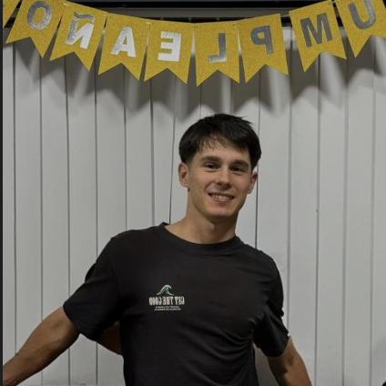

Las personas detrás
Nuestro equipo
Un equipo multidisciplinario con experiencia en tecnologìa, negocios y diseño orientado a PyMEs.
Dante Luca Cillo
CEO y Fundador
Encargado de la dirección general de la consultora, la planificación estratégica, la coordinación de proyectos y la supervisión de todas las áreas de trabajo. Además, gestionará la relación con los clientes y la toma de decisiones clave para el crecimiento de la empresa.

Fernando Orioli
Gerente de Marketing
Responsable de las estrategias de marketing y comercialización de la consultora, así como de la captación de nuevos clientes. También aportará su experiencia en integraciones de sistemas ERP y soluciones cloud para empresas de escala media.
Agustina Batalla
Especialista en UX y Producto
Responsable del diseño de experiencias digitales intuitivas y eficientes, asegurando que las herramientas implementadas sean fáciles de utilizar y favorezcan una rápida adopción por parte de los usuarios.

Juan Dasque
Especialista en Optimización y Procesos
Encargado de analizar y mejorar los procesos operativos de los clientes, identificando oportunidades de mejora y garantizando una transición eficiente hacia nuevas herramientas tecnológicas.
Micaela Pi
Especialista en Capacitación y Adopción
Responsable de la configuración técnica y personalización de los sistemas implementados según las necesidades de cada organización. Además, desarrollará capacitaciones para facilitar la adaptación de los usuarios a las nuevas tecnologìas.
Maria Eugenia Ortega Riego
Especialista en Diagnóstico y Calidad
Responsable de realizar el relevamiento inicial de los procesos de las empresas clientes, elaborar diagnósticos y diseñar planes de implementación personalizados. También supervisará los estándares de calidad de los proyectos para asegurar su éxito.